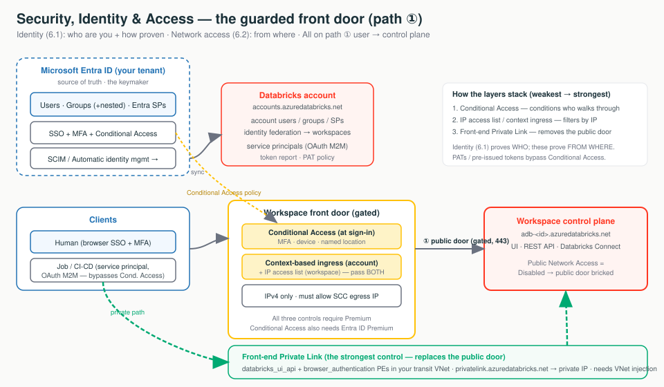

Networking (Stages 1–4) decided which network paths can reach a workspace. This topic decides who is on the other end and from where. Two subtopics: 6.1 Identity (who are you, how proven) and 6.2 Network access controls (from where you connect). Both harden the start of path ① (user/client → control plane) — they do nothing for path ② (compute ↔ control) or path ③ (compute → storage).
Identity is the front door; network controls are the layers around it. Microsoft Entra ID is the single keymaker that issues badges (SSO); a service principal is a robot's badge; a token is a day-pass. At the door: Conditional Access is the badge reader, IP access lists are the bouncer reading the return address, and front-end Private Link is a private tunnel that bricks over the public door. Define identity once in Entra ID, prove it via SSO or short-lived OAuth, then gate the door by where the request comes from.
Under Secure Cluster Connectivity (No Public IP), the classic compute plane's egress IP also knocks on this same front door. If you enable a workspace IP access list and forget that egress IP, classic clusters won't launch — the #1 self-inflicted break in this topic.

"Microsoft Entra ID is our single source of truth — humans log in with SSO + MFA, every production job runs as a service principal on short-lived OAuth, and long-lived PATs are capped or disabled. The workspace front door is then gated by Conditional Access, IP access lists, and — where a regulator demands it — front-end Private Link that removes the public door entirely. The controls stack; you don't pick one."
Microsoft Entra ID is the single source of truth: identities are defined once in the account and assigned to identity-federated workspaces. Switch the diagram between the provisioning model (how identities get in) and the authentication flow (how humans vs robots prove it), and click any box for the "what + why."
Define a user/group/SP once in the account, then assign it to identity-federated workspaces. Workspace-local groups (from a legacy non-federated workspace) cannot receive Unity Catalog grants — convert them to account groups.
| Capability | Automatic identity management | SCIM provisioning |
|---|---|---|
| Sync users / groups | ✓ / ✓ | ✓ / ✓ (direct members only) |
| Sync nested groups | ✓ | ✗ |
| Sync service principals | ✓ | ✗ |
| Needs an Entra app / admin role | ✗ | ✓ (Cloud App Administrator) |
| On by default | ✓ (accounts after 2025-08-01) | ✗ |
| Requires identity federation | ✓ | recommended (account-level) |
Provisioning the same principal via both SCIM and automatic identity management creates duplicates and permission conflicts. Pick one source of truth (Databricks recommends automatic identity management; keep SCIM as a documented fallback).
| Credential | Lifetime | Use it when | Avoid because |
|---|---|---|---|
| PAT (legacy) | max 730 days; auto-revoked after 90 days unused | A tool only supports PATs | Long-lived secret; bypasses Conditional Access |
| OAuth M2M (service principal) | Short-lived | Automation / CI-CD / jobs — recommended | — |
| OAuth U2M | Short-lived, auto-refreshed | Attended CLI/SDK as yourself | — |
| Entra ID token | Per Entra policy | Azure resources that only speak Entra ID | Not for hand-creating ADB user tokens |
Databricks CLI — create a robot identity for prod and cap PAT lifetime. Full IaC is the hands-on artifact.
# Create a Databricks-managed service principal + OAuth M2M secret (account-admin auth).
databricks account service-principals create --json '{"displayName":"prod-job-runner"}'
databricks account service-principal-secrets create <SP_ID> # store secret in Azure Key Vault
# Cap NEW PATs at 90 days (Databricks advises < 90). "0" reverts to the 730-day default.
databricks workspace-conf set-status --json '{ "maxTokenLifetimeDays": "90" }'
# Disable PATs entirely (warning: Partner Connect needs PATs ON):
databricks workspace-conf set-status --json '{ "enableTokensConfig": "false" }'Portal: Account console → Security → User provisioning → Automatic identity management = Enabled; Account console → User management → Service principals → Add; Workspace → Settings → Advanced → Personal Access Tokens.
User logs in but has no access → is the workspace federated / is the group an account group? Duplicate users → same principal via SCIM and automatic identity management? Job fails to auth → ran as an off-boarded human, or a PAT that hit its lifetime / the 90-day-unused auto-revoke? (Deactivation does not auto-revoke existing PATs.)
Three layers gate the workspace front door, weakest to strongest. Switch the diagram between the gated public door (Conditional Access → context ingress + IP list) and the private tunnel (front-end Private Link), and click any box for the "what + why."
Conditional Access is evaluated at sign-in (before a token issues). Databricks then checks ingress on the request: the account-level context-based ingress policy and the workspace IP access list are enforced together — a request must pass both, and a workspace list can only narrow, never widen, what the account policy allows. Front-end Private Link sits beneath all of this — it changes which IP the request even arrives on.
| Control | What it checks | Strength | Tier / prereq | Key limitation |
|---|---|---|---|---|
| IP access list (account / workspace) | Source IPv4 | Soft | Premium | IPv4 only; must allow SCC egress IP; only narrows context ingress |
| Context-based ingress | Identity + request type + IP | Medium | Premium | Account-level; verify GA/region before prod |
| Entra ID Conditional Access | Identity, MFA, device, location | Medium-strong | Premium + Entra ID Premium | Interactive sign-in only — PATs bypass it |
| Front-end Private Link | Arrives on a private IP in your VNet | Strongest | Premium + VNet injection | Needs browser_authentication PE + private DNS |
Workspace IP list (CLI) + the user-facing databricks_ui_api PE (Terraform). Full runbook is the Stage 3 hands-on.
# Enable first — lists are silently ignored until the flag is true. MUST allow the SCC/NAT egress IP.
databricks workspace-conf set-status --json '{ "enableIpAccessLists": "true" }'
databricks ip-access-lists create --json '{
"label": "office-and-vpn", "list_type": "ALLOW",
"ip_addresses": ["1.1.1.0/24", "203.0.113.7/32"] # include the SCC/NAT egress IP!
}'resource "azurerm_private_endpoint" "ui_api" {
name = "adb-fe-ui-api-pe"
subnet_id = azurerm_subnet.transit_pe.id # PE subnet in the TRANSIT VNet
private_service_connection {
private_connection_resource_id = azurerm_databricks_workspace.this.id
subresource_names = ["databricks_ui_api"] # exact sub-resource name
is_manual_connection = false
}
private_dns_zone_group { # resolve URL to the PRIVATE IP
private_dns_zone_ids = [azurerm_private_dns_zone.adb.id] # privatelink.azuredatabricks.net (fixed name)
}
}Portal: Conditional Access → target app 2ff814a6-3304-4ab8-85cb-cd0e6f879c1d (AzureDatabricks),
Report-only first; Private Link → add databricks_ui_api + browser_authentication PEs, delete-lock the web-auth workspace, verify nslookup returns the private IP.
Clusters won't launch after enabling IP lists → is the SCC/NAT egress IP on
the ALLOW list? Lists "do nothing" → is enableIpAccessLists true?
Allowed-but-denied → the account context-based ingress policy denies it (pass both).
SSO redirect fails after Private Link → nslookup the regional
*.pl-auth.azuredatabricks.net; missing browser_authentication PE or DNS
forwarding. CA "isn't blocking" a tool → it's using a PAT (bypasses Conditional Access).
browser_authentication when enabling front-end Private Link (SSO breaks)Identity first, then network location. Make Entra ID the single source of truth and run jobs as service principals before touching any network control. Then layer controls from cheap (Conditional Access) → soft (IP lists) → hard (front-end Private Link), only as the regulatory bar demands. They stack; you don't choose one.
| Customer asks… | Architect answers… |
|---|---|
| "When someone leaves, does their access really disappear?" | Yes if Entra ID is the source of truth (SCIM / automatic identity mgmt) — but existing PATs aren't auto-revoked; revoke them explicitly via the Token report. |
| "Can we force MFA / block off-network logins?" | Yes — Entra ID Conditional Access on the AzureDatabricks app, not a Databricks toggle. Pairs with IP access lists / front-end Private Link. |
| "We're rolling out MFA tenant-wide — does it cover Databricks?" | Yes, via app 2ff814a6-...-cd0e6f879c1d — but warn that PATs and pre-issued tokens bypass it. |
| "Can you pin access to our corporate egress / VPN ranges?" | Yes — workspace + account IP access lists (IPv4), or account-level context-based ingress. |
| "Does any user traffic ever cross the public internet?" | Only front-end Private Link with Public Network Access = Disabled gives a clean "no"; IP lists and Conditional Access still ride the public front door. |
| "Will turning this on lock our admins or break clusters?" | Two real risks: omitting your own IP, and omitting the SCC/NAT egress IP (clusters won't launch). |
| "Can we use Okta directly instead of Entra ID?" | On Azure, federate it into Entra ID; Entra ID stays the IdP Databricks talks to. |
Under SCC the compute egress IP hits the same front door.First check: is the SCC/NAT egress IP on the ALLOW list?
An ALLOW list that omits the current IP.First check: hit the REST API/CLI as account admin, or disable enableIpAccessLists.
Lists are ignored until the feature flag is on.First check: databricks workspace-conf get-status enableIpAccessLists.
The account context-based ingress policy denies it.First check: the account policy (and dry-run vs enforced) — a request must pass both.
Missing web-auth endpoint or DNS forwarding.First check: nslookup the regional *.pl-auth.azuredatabricks.net URL.
Same principal via SCIM and automatic identity mgmt.First check: the provisioning source — pick one.
SCIM syncs neither; SPs provision on first use.First check: automatic identity mgmt on, and has the SP run once?
The client uses a PAT/pre-issued token.First check: the auth method, not the CA policy.